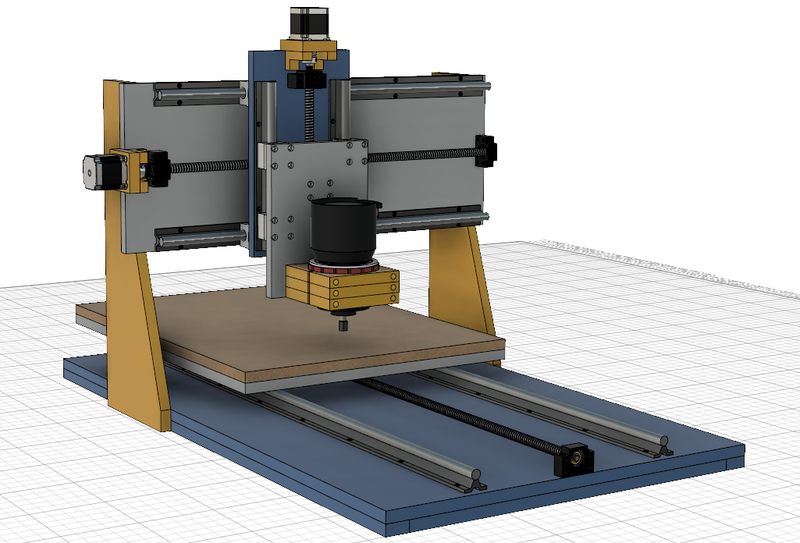

<div class="panel panel-default">
  
</div>


<div class="panel panel-default">
  <div class="panel-heading">Machine Position</div>
  <div class="table-responsive">
    <table class="table">
      <tr>
          <td>X</td>
          <td>{{ machine.status.wX | number:3 }}</td>
        </tr>
        <tr>
          <td>Y</td>
          <td>{{ machine.status.wY | number:3 }}</td>
        </tr>
        <tr>
          <td>Z</td>
          <td>{{ machine.status.wZ | number:3 }}</td>
        </tr>
        <tr>
          <td>Running</td>
          <td>{{ machine.status.running }}</td>
        </tr>
        <tr>
          <td>Motion Planner</td>
          <td>{{ machine.status.motionBuffer }}</td>
        </tr>
        <tr>
          <td>Rx Buffer</td>
          <td>{{ machine.status.rxBuffer }}</td>
        </tr>
    </table>
  </div>
</div>

<div class="btn-group">
    <label class="btn btn-success" ng-model="setup.jogDistance" uib-btn-radio="'0.1'" uncheckable>0.1</label>
    <label class="btn btn-success" ng-model="setup.jogDistance" uib-btn-radio="'1'" uncheckable>1</label>
    <label class="btn btn-success" ng-model="setup.jogDistance" uib-btn-radio="'10'" uib-uncheckable="uncheckable">10</label>
    <label class="btn btn-success" ng-model="setup.jogDistance" uib-btn-radio="'25'" uib-uncheckable="uncheckable">25</label>
</div>
<div id="jog-buttons">
  <button type="button" id="jog-xp" uib-tooltip="A" class="btn btn-info" ng-click='grbl("G91\nG0 X" + setup.jogDistance);'>x+</button>
  <button type="button" id="jog-xn" uib-tooltip="D" class="btn btn-info" ng-click='grbl("G91\nG0 X-" + setup.jogDistance);'>x-</button>
  <button type="button" id="jog-yp" uib-tooltip="W" class="btn btn-info" ng-click='grbl("G91\nG0 Y" + setup.jogDistance);'>y+</button>
  <button type="button" id="jog-yn" uib-tooltip="S" class="btn btn-info" ng-click='grbl("G91\nG0 Y-" + setup.jogDistance);'>y-</button>
  <button type="button" id="jog-zp" uib-tooltip="Q" class="btn btn-info" ng-click='grbl("G91\nG0 Z" + setup.jogDistance);'>z+</button>
  <button type="button" id="jog-zn" uib-tooltip="E" class="btn btn-info" ng-click='grbl("G91\nG0 Z-" + setup.jogDistance);'>z-</button>
</div>
